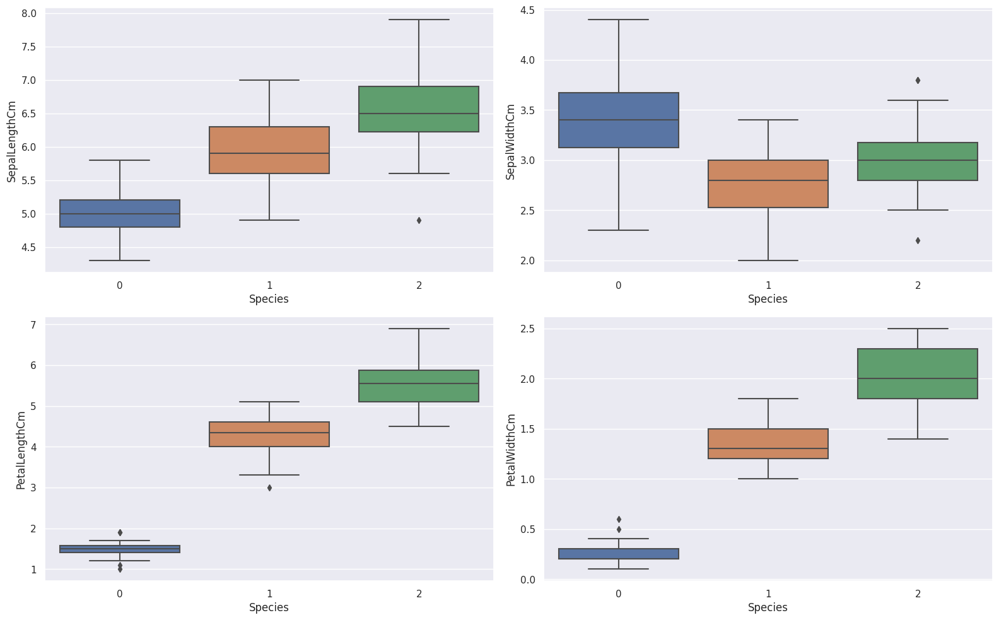
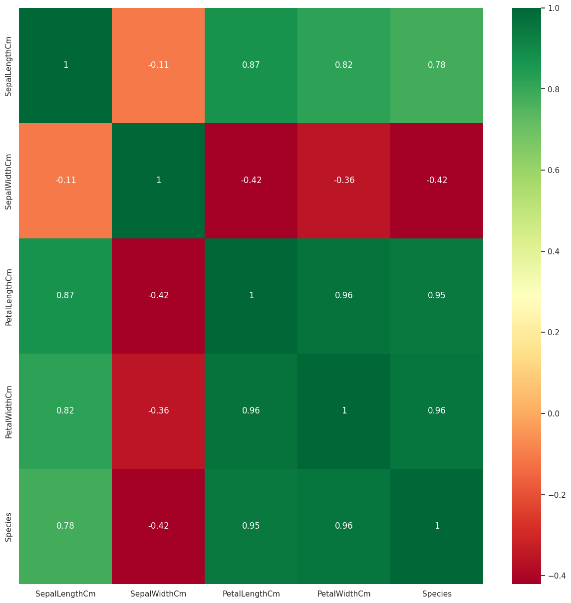

Tugas 6 - Step by Step PCA with Iris dataset#
Nama : Muhammad Muqtafin Nuha
NIM : 210411100218
 Liat Dataset di GitHub
Liat Dataset di GitHub1. Analisa data#
Install Library & Module#
import numpy as np # linear algebra
import pandas as pd # data processing, CSV file I/O (e.g. pd.read_csv)
from sklearn import datasets
from sklearn.model_selection import train_test_split
from sklearn.neighbors import KNeighborsClassifier
import seaborn as sns
sns.set()
import matplotlib.pyplot as plt
import os
Ambil Dataset#
iris_data = pd.read_csv("https://raw.githubusercontent.com/iamwilldev/Kumpulan-Dataset/master/Iris.csv",index_col='Id')
Univariate EDA#
iris_data.info()
<class 'pandas.core.frame.DataFrame'>
Int64Index: 150 entries, 1 to 150
Data columns (total 5 columns):
# Column Non-Null Count Dtype
--- ------ -------------- -----
0 SepalLengthCm 150 non-null float64
1 SepalWidthCm 150 non-null float64
2 PetalLengthCm 150 non-null float64
3 PetalWidthCm 150 non-null float64
4 Species 150 non-null object
dtypes: float64(4), object(1)
memory usage: 7.0+ KB
iris_data.describe()
| SepalLengthCm | SepalWidthCm | PetalLengthCm | PetalWidthCm | |
|---|---|---|---|---|
| count | 150.000000 | 150.000000 | 150.000000 | 150.000000 |
| mean | 5.843333 | 3.054000 | 3.758667 | 1.198667 |
| std | 0.828066 | 0.433594 | 1.764420 | 0.763161 |
| min | 4.300000 | 2.000000 | 1.000000 | 0.100000 |
| 25% | 5.100000 | 2.800000 | 1.600000 | 0.300000 |
| 50% | 5.800000 | 3.000000 | 4.350000 | 1.300000 |
| 75% | 6.400000 | 3.300000 | 5.100000 | 1.800000 |
| max | 7.900000 | 4.400000 | 6.900000 | 2.500000 |
iris_data.head()
| SepalLengthCm | SepalWidthCm | PetalLengthCm | PetalWidthCm | Species | |
|---|---|---|---|---|---|
| Id | |||||
| 1 | 5.1 | 3.5 | 1.4 | 0.2 | Iris-setosa |
| 2 | 4.9 | 3.0 | 1.4 | 0.2 | Iris-setosa |
| 3 | 4.7 | 3.2 | 1.3 | 0.2 | Iris-setosa |
| 4 | 4.6 | 3.1 | 1.5 | 0.2 | Iris-setosa |
| 5 | 5.0 | 3.6 | 1.4 | 0.2 | Iris-setosa |
## Label encoding since the algorithms we are going to use do not take non numerical or boolean data as inputs
iris_data.Species.replace({'Iris-setosa':0,'Iris-versicolor':1, 'Iris-virginica':2},inplace=True)
iris_data.head()
| SepalLengthCm | SepalWidthCm | PetalLengthCm | PetalWidthCm | Species | |
|---|---|---|---|---|---|
| Id | |||||
| 1 | 5.1 | 3.5 | 1.4 | 0.2 | 0 |
| 2 | 4.9 | 3.0 | 1.4 | 0.2 | 0 |
| 3 | 4.7 | 3.2 | 1.3 | 0.2 | 0 |
| 4 | 4.6 | 3.1 | 1.5 | 0.2 | 0 |
| 5 | 5.0 | 3.6 | 1.4 | 0.2 | 0 |
## null count analysis before modelling to keep check
import missingno as msno
p=msno.bar(iris_data)

sns.countplot(y=iris_data.Species ,data=iris_data)
plt.xlabel("Count of each Target class")
plt.ylabel("Target classes")
plt.show()

Bivariate EDA#
fig,ax = plt.subplots(nrows = 2, ncols=2, figsize=(16,10))
row = 0
col = 0
for i in range(len(iris_data.columns) -1):
if col > 1:
row += 1
col = 0
axes = ax[row,col]
sns.boxplot(x = iris_data['Species'], y = iris_data[iris_data.columns[i]],ax = axes)
col += 1
plt.tight_layout()
# plt.title("Individual Features by Class")
plt.show()

p=sns.pairplot(iris_data, hue = 'Species')

plt.figure(figsize=(15,15))
p=sns.heatmap(iris_data.corr(), annot=True,cmap='RdYlGn')

Salah satu tujuan terbesar dari plot dan EDA semacam ini adalah untuk mengidentifikasi fitur yang tidak banyak membantu dalam menjelaskan hasil target. Fitur SepalWidthCm tampaknya kurang relevan dalam menjelaskan kelas target dibandingkan dengan fitur lainnya
iris_data.hist(figsize=(15,12),bins = 15)
plt.title("Features Distribution")
plt.show()

Modelling#
Without PCA#
X = iris_data.drop(['Species'],axis=1)
y = iris_data.Species
from sklearn.preprocessing import MinMaxScaler
scaler = MinMaxScaler()
X=scaler.fit_transform(X)
X_train, X_test, y_train, y_test = train_test_split(X, y, test_size = 0.3, random_state=20, stratify=y)
knn = KNeighborsClassifier(7)
knn.fit(X_train,y_train)
print("Train score before PCA",knn.score(X_train,y_train),"%")
print("Test score before PCA",knn.score(X_test,y_test),"%")
Train score before PCA 0.9714285714285714 %
Test score before PCA 0.9777777777777777 %
With PCA#
from sklearn.decomposition import PCA
pca = PCA()
X_new = pca.fit_transform(X)
pca.get_covariance()
array([[ 0.05290845, -0.00454496, 0.05996621, 0.05982683],
[-0.00454496, 0.03263959, -0.02271983, -0.02048285],
[ 0.05996621, -0.02271983, 0.08943348, 0.09155279],
[ 0.05982683, -0.02048285, 0.09155279, 0.1011136 ]])
explained_variance=pca.explained_variance_ratio_
explained_variance
array([0.84141901, 0.11732474, 0.03490564, 0.00635061])
with plt.style.context('dark_background'):
plt.figure(figsize=(6, 4))
plt.bar(range(4), explained_variance, alpha=0.5, align='center',
label='individual explained variance')
plt.ylabel('Explained variance ratio')
plt.xlabel('Principal components')
plt.legend(loc='best')
plt.tight_layout()

pca=PCA(n_components=3)
X_new=pca.fit_transform(X)
X_train_new, X_test_new, y_train, y_test = train_test_split(X_new, y, test_size = 0.3, random_state=20, stratify=y)
knn_pca = KNeighborsClassifier(7)
knn_pca.fit(X_train_new,y_train)
print("Train score after PCA",knn_pca.score(X_train_new,y_train),"%")
print("Test score after PCA",knn_pca.score(X_test_new,y_test),"%")
Train score after PCA 0.9619047619047619 %
Test score after PCA 0.9777777777777777 %
# Visualising the Test set results
classifier = knn_pca
from matplotlib.colors import ListedColormap
X_set, y_set = X_test_new, y_test
X1, X2 = np.meshgrid(np.arange(start = X_set[:, 0].min() - 1, stop = X_set[:, 0].max() + 1, step = 0.01),
np.arange(start = X_set[:, 1].min() - 1, stop = X_set[:, 1].max() + 1, step = 0.01))
plt.contourf(X1, X2, classifier.predict(np.array([X1.ravel(), X2.ravel(),np.zeros((X1.shape[0],X1.shape[1])).ravel()]).T).reshape(X1.shape),
alpha = 0.75, cmap = ListedColormap(('pink', 'lightgreen')))
plt.xlim(X1.min(), X1.max())
plt.ylim(X2.min(), X2.max())
for i, j in enumerate(np.unique(y_set)):
plt.scatter(X_set[y_set == j, 0], X_set[y_set == j, 1],
c = ListedColormap(('red', 'green'))(i), label = j)
plt.title('KNN PCA (Test set)')
plt.xlabel('PC1')
plt.ylabel('PC2')
plt.legend()
plt.show()
<ipython-input-25-a1aa90301d04>:12: UserWarning: *c* argument looks like a single numeric RGB or RGBA sequence, which should be avoided as value-mapping will have precedence in case its length matches with *x* & *y*. Please use the *color* keyword-argument or provide a 2D array with a single row if you intend to specify the same RGB or RGBA value for all points.
plt.scatter(X_set[y_set == j, 0], X_set[y_set == j, 1],